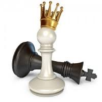
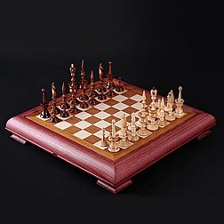
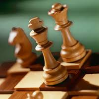
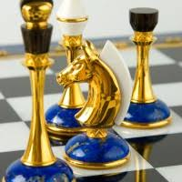
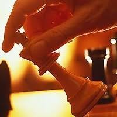

Фотографии
    С чего же надо начать? Со знакомства с этой древней игрой. Шахматы родились в одной прекрасной стране с названием Индия 2000 лет назад. Давным-давно, 2000 лет назад, в одной прекрасной стране с названием Индия жил да был один очень могучий, сильный и богатый шах Шеран-Шихран. У него было множество дворцов, крепостей и огромная армия ЧАТУРАНГА, с которой он совершал набеги на своих недругов-соседей. Вскоре он всех противников победил, потому что в его армии было сто тысяч пеших воинов, боевые кони и мощные колесницы, а самое главное – непобедимые слоны. Раньше,слоны считались самым грозным в мире оружием.
И вот, когда воевать стало не с кем, заскучал великий государь. Очень скоро все слоны да бегемоты были выловлены, все страшные тигры да крокодилы на цепь посажены. Ни войны, ни охоты!
Посидел падишах на троне да на печи неделю-другую и закричал от скуки страшным голосом: «Скучно! Подать мне сюда всех великих мудрецов да чародеев!» Прибежали испуганные мудрецы: «Что тебе надобно, царь-государь?» «Развеселите меня! Придумайте забаву царскую.
Опечалились мудрецы. Дал на все думы царь лишь три дня и три ночи.
Достаёт самый старый мудрец из мешка деревянный ящичек и раскрывает его, а там – деревянные фигурки. Закричал царь, затопал ногами: «Что это такое?! Другие мне золото, бриллианты приносили, а ты что принёс!»
«Не всё то золото, что блестит!» – мудрец отвечает.
Посмотрел внимательнее царь и узнал в деревянных фигурках всё своё войско: и коней, и пехоту, и крепости, и своих генералов, а в одной фигуре узнал даже самого себя.
Мудрец достал шахматную доску и на одном краю выстроил армию белого короля, а напротив, на другом - армию черного короля.
Название этой игры очень загадочное, но в переводе на русский язык всё достаточно просто. «Шах» — это Король, а «Мат» — это конец. Вместе получается «Конец Королю».
Индийский Шах-Падишах очень любил эту игру и играл в неё все дни и ночи напролёт. А когда к нему приезжали гости из других стран, шах обязательно дарил им шахматный набор.
Со временем шахматы разъехались по всему свету и сейчас в эту замечательную игру играют во всех странах мира.
Миллионы людей по всей Земле, а может быть и не только... играют в шахматы.
Знакомьтесь, учитесь, играйте и продвигайте эту великую игру!
Всеволод Викторович Костров